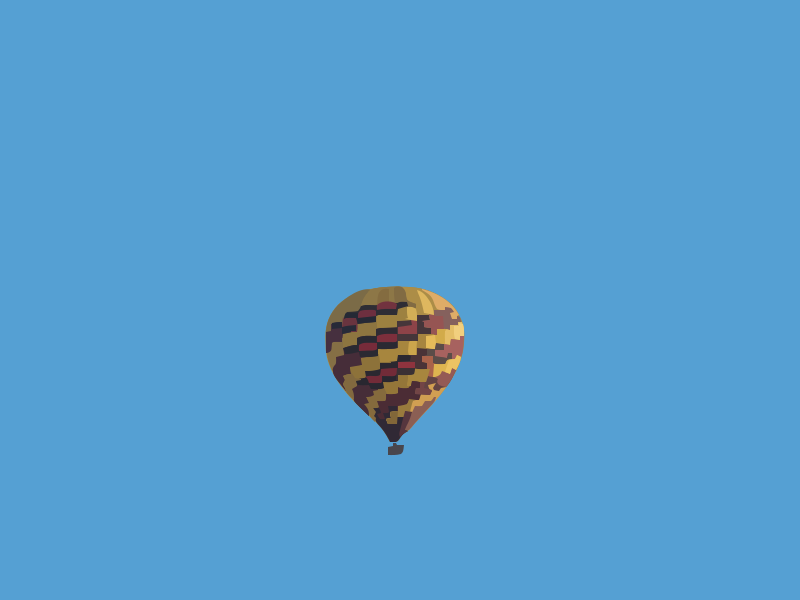

मुफ़्त ऑनलाइन छवि वेक्टराइज़र
स्वचालित रूप से किसी भी रास्टर छवि को वेक्टराइज़ करें और इसे एक साफ़ SVG वेक्टर में बदलें - मुफ़्त और तुरंत।
ऑनलाइन छवि कैसे वेक्टराइज़ करें
तीन सरल चरणों में स्वचालित छवि वेक्टराइज़ेशन।
अपनी छवि अपलोड करें
कोई भी रास्टर प्रारूप स्वीकार किया जाता है।
सेटिंग्स समायोजित करें
एक प्रीसेट चुनें और मापदंडों को ठीक करें।
अपना SVG डाउनलोड करें
किसी भी संपादक में उपयोग के लिए तैयार एक साफ़ SVG फ़ाइल प्राप्त करें।
कनवर्टर के वास्तविक परिणाम



छवि वेक्टराइज़ करने का क्या अर्थ है?
यह एक पिक्सेल-आधारित छवि को गणितीय पथों से बने वेक्टर ग्राफिक्स में बदलने की प्रक्रिया है।
सॉफ़्टवेयर मूल छवि में रंगों और किनारों का विश्लेषण करता है और उन्हें SVG प्रारूप में ज्यामितीय वस्तुओं के रूप में फिर से बनाता है।
रास्टर बनाम वेक्टर: यह क्यों मायने रखता है
रास्टर छवियों का एक निश्चित रिज़ॉल्यूशन होता है। ज़ूम करने पर छवि खराब हो जाती है।
वेक्टर छवियां आकार को गणितीय रूप से संग्रहीत करती हैं। इसके लाभ हैं:
- बिना सीमा के स्केल करें: हमेशा स्पष्ट दिखता है
- संपादन योग्य ज्यामिति: किसी भी वेक्टर संपादक में आकृतियों में हेरफेर करें
- छोटा फ़ाइल आकार: SVG के रूप में आइकन बहुत हल्के होते हैं
- मशीन के लिए तैयार: लेजर कटर को वेक्टर पथ की आवश्यकता होती है
PixelToPath का उपयोग क्यों करें?
उत्पादन-गुणवत्ता वाले परिणामों के लिए विशेष रूप से बनाया गया है।
हमेशा मुफ़्त
बिना किसी कीमत के असीमित छवियां वेक्टराइज़ करें।
उद्देश्य-निर्मित प्रीसेट
विभिन्न प्रकार की छवियों के लिए अलग-अलग रणनीतियाँ।
ऑफ़लाइन भी काम करता है
Windows या Linux के लिए ऐप डाउनलोड करें।
कोई फ़ाइल प्रतिधारण नहीं
हम आपकी फ़ाइलें कभी नहीं रखते।
साफ़ SVG आउटपुट
न्यूनतम बेमानी नोड्स के साथ अनुकूलित पथ।
ओपन सोर्स
कोड GitHub पर पारदर्शी है।
छवि वेक्टराइज़ेशन के लोकप्रिय उपयोग
वेक्टराइज़ेशन कई विषयों में आवश्यक है:
- लोगो आधुनिकीकरण: पुराने लोगो को स्पष्ट वेक्टर में बदलें
- कटिंग मशीनें: Cricut उपयोगकर्ताओं को SVG की आवश्यकता होती है
- चित्रण वर्कफ़्लो: हाथ से बनाए गए रेखाचित्रों को वेक्टराइज़ करें
- कढ़ाई और स्क्रीन प्रिंटिंग: वेक्टर इनपुट की आवश्यकता होती है
- वास्तुकला: CAD के लिए तकनीकी चित्र वेक्टराइज़ करें
यह एक पिक्सेल फ़ाइल को एक पेशेवर संपत्ति में बदल देता है।
संबंधित टूल
PixelToPath से अधिक टूल।
अक्सर पूछे जाने वाले प्रश्न
छवि वेक्टराइज़ेशन क्या है?
यह एक पिक्सेल छवि को गणितीय पथों से बने SVG ग्राफिक्स में बदलने की प्रक्रिया है।
क्या यह मुफ़्त है?
हाँ, पूरी तरह से मुफ़्त।
किस प्रकार की छवियां सबसे अच्छी वेक्टराइज़ होती हैं?
स्पष्ट आकार और उच्च कंट्रास्ट वाली छवियां।
क्या मैं Cricut में SVG का उपयोग कर सकता हूँ?
हाँ। Cricut Design Space SVG फ़ाइलें स्वीकार करता है।
मैं लोगो को कैसे वेक्टराइज़ करूँ?
अपना लोगो अपलोड करें, ब्लैक एंड व्हाइट प्रीसेट चुनें और SVG डाउनलोड करें।
अपनी छवि अभी वेक्टराइज़ करें - यह मुफ़्त है
कोई खाता नहीं। अपना वेक्टर SVG एक मिनट के अंदर डाउनलोड करें।
ओपन सोर्स विकास का समर्थन करें
PixelToPath उपयोग करने के लिए मुफ़्त है। यदि इस टूल ने आपका समय बचाया है, तो मुझे एक कॉफ़ी पिलाने पर विचार करें।
❤️ PayPal के माध्यम से दान करें